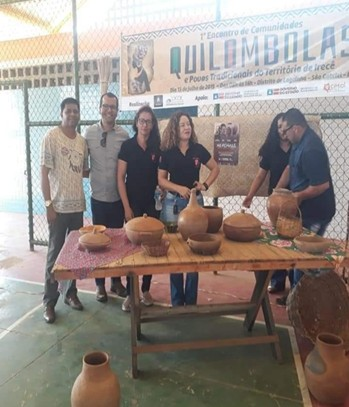
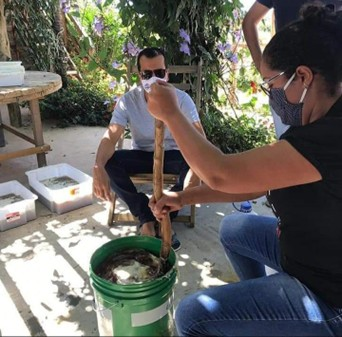
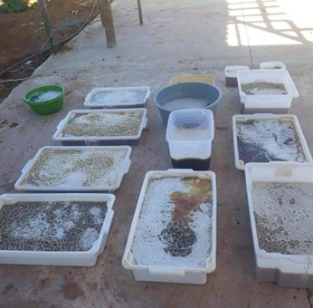

Oficina de Geração de Renda
O projeto de Oficinas e Geração de Renda promove capacitação e autonomia financeira por meio de atividades práticas e cursos profissionalizantes. As ações incentivam o desenvolvimento de habilidades, fortalecem a autoestima e criam oportunidades reais de geração de renda para as mulheres atendidas. Através de parcerias com instituições locais, o projeto oferece oficinas de artesanato, culinária, costura e empreendedorismo, proporcionando um ambiente de aprendizado e troca de experiências. O objetivo é empoderar as mulheres para que possam alcançar independência financeira e melhorar sua qualidade de vida.



Impacto
+150 mulheres capacitadas
+30 oficinas reali
Como funciona
O projeto oferece oficinas práticas e cursos que desenvolvem habilidades produtivas, promovendo autonomia financeira e valorização pessoal. As atividades incentivam a economia solidária e a geração de renda.
Como ajudar
Você pode contribuir com doações, apoio voluntário ou compartilhando conhecimento para fortalecer as ações de capacitação e geração de renda.
Quero ajudar